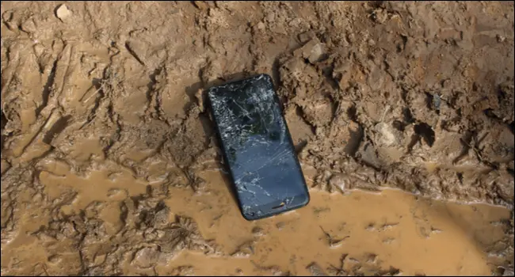
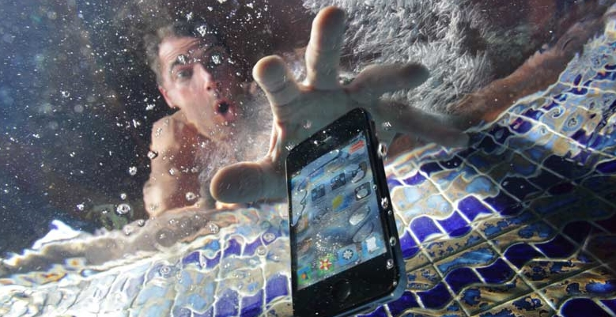

by Tristan Thompson, 2022
What are mobile phones?
A mobile phone as stated by
Techopedia (A tech company for IT solutions) is a wireless handheld device that allows users to make and
receive calls. While the earliest generation of mobile phones could only make and receive calls, today mobile
phones are a lot more accommodating for web browsers communication, games, cameras, and many more applications
and
systems. Also, while mobile phones used to be mainly known as “cellular and or cell” phones, now they are more
commonly called smart phones.
Brief History and raw materials of mobile devices
The first invention of mobile phones:
The first hand-held phone was developed by Martin Cooper an engineer from Motorola, the phone could connect
over
Bell’s AMPS. Motorola launched the phone (DynaTAC) in 1984. It weighed over a kilogram and was affectionately
known as The Brick, but it quickly became a must-have then for wealthy financers and entrepreneurs.
IMPACTS OF MOBILE PHONES ON THE ENVIRONMENT
10% of e-waste comes from our mobile phones. According to Statistica,
6.64bn people across the world own a smartphone. That’s 83.72% of the current human population - a 34.32%
increase
since 2016. If only 20% of these smartphones are recycled, many of the core materials used to produce them will
run out in the next century. This will rapidly exacerbate the ongoing microchip shortage, which has affected
both
car and smartphone manufacturers in recent years.
Mobile devices contain a wide variety of materials compact in them including lead, nickel, mercury, manganese,
lithium, zinc, arsenic, antimony, beryllium, and copper. These metals are toxic and most of them are highly
toxic
to humans and the environment
EFFECTS OF PHONES ON THE ENVIRONMENT
Health Implications
Pollutions
- Health
As stated by WHO and other scientist around the world, mobile phones are possible carcinogen(cause of cancer)
because of the radiation it emits specifically brain cancer and (ask Sir abou this).
The effects of lead
poisoning are well known. If absorbed into the bloodstream in sufficient quantities, lead, used in the circuit
boards of mobile phones, causes serious liver and kidney damage in adults and neurological damage in children.
Nickel, a substantial quantity of which is present in handset batteries, causes cancer. Similarly, mercury is
another dangerous substance found in batteries, especially in older devices. Even a small amount of mercury
can
harm humans adversely. Though the use of mercury has been reduced in cell phones to a great extent, it is
present in fairly large quantities in older phones.
Magnesium induces neurochemical changes and has been identified as a contributing factor to developing
Alzheimer’s. Manganese is used in making circuit boards and cases of mobile phones.
- Land
Although Lithium-ion batteries are free of heavy metals (lithium has a low atomic number), lithium’s high
instability can create environmental problems. When exposed to water which is present in most landfills, the
metal can burn, causing underground fires that are difficult to extinguish.

- Water
The arsenic compound Gallium Arsenide is used in LEDs which are in mobile phones. Arsenic is a well-known
poison. When the concentration of Arsenic in water increases beyond 10 parts per million it becomes dangerous.
In fact, Arsenic poisoning is common in areas of industrialization.

SOLUTIONS TO MITIGATE THE EFFECTS OF PHONES E-WASTE ON THE ENVIRONMENT
- ✅Refurbish device: If a cell phone is simply thrown away, all the materials, effort, and money
spent in production and by the consumer are also discarded. Instead of living in a “throw-away” culture,
there should be a shift towards alternative uses and solutions for electronics.
Click here to see a site that fixes devices
- ✅E-Cycling: Giving your old devices away for free may not seem like a good trade off, but it is
much
better than having them in that drawer of yours or on that table, where you are running the risk of being
exposed to the harmful content it holds inside.
So, just Click here to find E-Cycling Centers near you.
Friendly advise : You may want to have the memory on the mobile device wiped and factory
reset
before selling, donating, or giving it away if it has private information on it.
- ✅E-friendly Devices: There are some companies whom realize the need for more e-friendly devices
and
as such either reduced their use of harmful material are stop using them. some of which are: